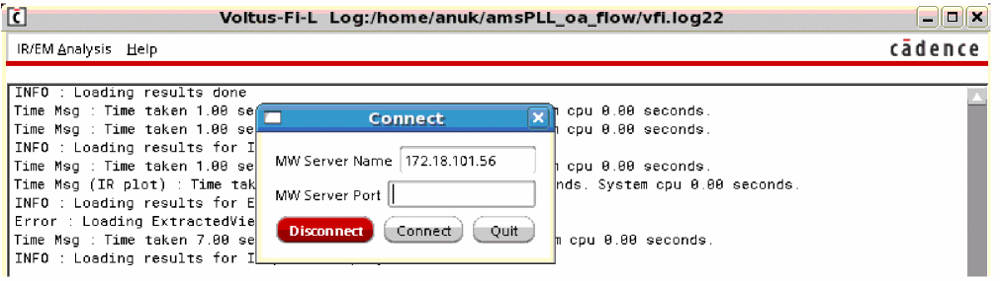

11
Viewing Results in vsaplot or vfiplot
- Overview
- Launching vsaplot
- Generating the VSA_RESULTS Database in Voltus-Fi
- Specifying the Order of Layers in vsaplot
- Launching vsaplot from the Shell
- Viewing Results in vsaplot
- Querying IR Drop and EM Results
- Calculating Relative Resistance Values between the Nodes on a Net in vfiplot
- Synchronizing Multiple vsaplot Windows
- Synchronizing vsaplot with the Layout or Extracted View
Overview
The vsaplot/vfiplot utility is used to view the results of the IR drop and EM analysis that is performed in Voltus-Fi, Voltus-Fi-L (VFI-L) and Voltus-Fi-XL (VFI-XL), respectively.
The functionality offered by vsaplot and vfiplot is essentially the same, with the following key differences:
- The vfiplot utility requires a VFI_XL license checkout, whereas vsaplot can be run using either the VFI_L or the VFI_XL license.
- The vsaplot utility provides analysis of only those results that are created using the VFI-L flow whereas vfiplot provides analysis of results created using both, VFI-L and VFI-XL.
-
The Relative-R feature, which is used to calculate the relative resistance between nodes, is supported in vfiplot but not supported in vsaplot.
The vsaplot utility has its own display area, menus, and windows that provide options for customizing the display of IR drop and EM violations in the main display area of the tool.
The key benefits of viewing the results of IR drop and EM analysis in vsaplot are as follows:
- No dependency on the Virtuoso layout: vsaplot lets you view the results of the analyses in its own display area, which means, you do not need the Virtuoso layout for displaying the plots.
- Faster display: In vsaplot, the results are loaded and displayed quickly and when you change your selections, the plots are updated quickly. This performance enhancement is seen because vsaplot is independent of Virtuoso. Therefore, the time that would otherwise be spent in calling the Virtuoso APIs to display the results on the Virtuoso layout is saved.
Launching vsaplot
Launching the vsaplot involves the following steps:
Generating the VSA_RESULTS Database in Voltus-Fi
Before launching the vsaplot, you need to generate the vsaplot database or the VSA_RESULTS directory. This can be done both from the Voltus-Fi GUI and batch mode. Both methods are detailed below.
Generating the VSA_RESULTS Database in the GUI Mode
-
Set the following environment variable before launching Voltus-Fi:
setenv VFI_VSAPLOT_DB 1
-
Launch Voltus-Fi and open the IR/EM Results form. Provide the inputs listed below for generating the
VSA_RESULTSdatabase for the IR drop analysis or EM analysis results on the IR and EM tabs, respectively.- The State Directory/Results File, which is the path to the simulation directory that stores the results of the simulation in the VFI-L flow and a file containing the EMIR simulation result data in the VFI-XL flow
- The DFII Layermap file, which contains the mapping between the extracted view and the DFII layer names in the VFI-L flow and the xDSPF and the DFII layer names in the VFI-XL flow
- The QRC Run, which includes the Quantus (QRC) Run Directory and the Run Name.
-
For generating the
VSA_RESULTSfor EM analysis:
-
Click Load Results. In the GUI mode, the plots for all the analysis types that are selected on the EM tab of the IR/EM Results form while loading the results will be available in vsaplot. The following analysis types are available on the EM tab;
max,avg,avgabs,AC Peak, andrms. -
The
VSA_RESULTSdirectory is created in the current directory containing the IR drop and EM analysis results.
Generating the VSA_RESULTS Database in the Batch Mode
This section provides details of the commands used to generate the vsaplot db directory or the VSA_RESULTS directory. This directory is then used to run the vsaplot.
To generate the VSA_RESULTS directory, run the following command:
where the <cmd_file_name> contains the name of the file with various commands.
VSA_RESULTS directory when running in the batch mode.
The following commands are used to generate the VSA_RESULTS directory for IR drop and EM analysis in vsaplot for both VFI-L and VFI-XL. However, there are some parameters that are specific to either VFI-L or VFI-XL. The distinction is provided in the parameter descriptions.
Specifying the Order of Layers in vsaplot
By default, the layer order used for viewing results in vsaplot is the same as that in the PGDB Layermap file. However, you can specify the order of layers for viewing in vsaplot by specifying the layer order in a file, control_layer file. In this file, the layer name and order is specified in the following format:
For layers that are not to be displayed, use the following format in the file:
After generating the control_layer file, specify the following environment variables before launching vsaplot.
- VSAPLOT_USE_DEFAULT_LAYER_ORDER – Uses the original layer order created by VFI-XL and VFI-L in VSA_RESULTS directory. OR
- VSAPLOT_EXTERNAL_LAYER_ORDER_FILE_PATH – Uses the control_layer file at the specified location.
For details, see VSAPLOT_USE_DEFAULT_LAYER_ORDER and VSAPLOT_EXTERNAL_LAYER_ORDER_FILE_PATH in the “Environment Variables” chapter.
The software will follow the following order of priority while searching for the control_layer file:
- If VSAPLOT_USE_DEFAULT_LAYER_ORDER is specified, use the default order.
- If VSAPLOT_EXTERNAL_LAYER_ORDER_FILE_PATH is specified, use the file at the specified location.
- If neither of the above variables are specified, search for the control_layer file in the default location, VSA_RESULTS directory
- If no control_layer file is available, use the layer order from previous session, if available
- If the above is not available, use the default layer order
Launching vsaplot
You can launch vsaplot in two ways, from the Voltus-Fi console menu, or directly from the UNIX, shell, or xterm window.
Launching vsaplot from the Shell
You can open vsaplot directly from the UNIX, shell, or xterm window as follows:
<VSA_Results_DB> is the path of the result directory in which the results of the IR drop or EM analysis are saved.
vsaplot or vfiplot in the shell without specifying the results directory. You can then click the File menu and Open submenu in the vsaplot window to specify the results directory. This is detailed in the File Menu section.Launching vsaplot from the GUI
You can launch the vsaplot from the IR/EM Analysis menu in the Voltus-Fi console in the following ways.
-
From the Connect To vsaplot submenu of the IR/EM analysis menu. When you click this option, the Connect pop-up window opens. Provide the name of the MW Server Port and click Connect. This is shown in the images below.
Figure 11-1 Launching vsaplot from IR/EM Analysis – Connect To vsaplot/vfiplot MenuFigure 11-2 Opening the Connect Pop-Up Window -
From the Open vsaplot submenu of the IR/EM Analysis menu. When you click this option, the vsaplot window opens.
Figure 11-3 Launching vsaplot from IR/EM Analysis – Open vsaplot/vfiplot Menu
Viewing Results in vsaplot
When you launch vsaplot either from the GUI or in the batch mode, the vsaplot window opens. Before detailing the options available for viewing and customizing results in vsaplot, let us first look at the main menus, submenus, and components of vsaplot.
The following topics are covered in this section:
The main window of the vsaplot is shown in the figure below.
Figure 11-4 The vsaplot Window
Main Menus of vsaplot
The following main menus are available in vsaplot.
File Menu
The File menu has the following submenus:
These submenus are detailed below.
-
The File – Open submenu provides the following options:
-
Open Results: Opens the VSA Result Directory pop-up window. Select the results directory and click Choose. You do not need to specify the result directory here if you have already specified it while launching the tool using theFigure 11-5 The Open VSA Result Directory Form
vsaplot<Result_DB> or thevfiplot <Result_DB>command in the shell.The extracted view or the layout view of the design will open in the display area or the layout area of vsaplot. - Open New Window: Opens the VSA Result Directory pop-up window. Select the results directory and click Choose. This opens a new vsaplot window for the specified results directory.
-
Open New Window and Sync: Opens the Main Window pop-up window that lets you launch a sub-window and synchronize connected windows as shown below.
Figure 11-6 The Main Window - Open New Window and Close: Opens the VSA Result Directory pop-up window. Select the results directory and click Choose. This opens a new vsaplot window for the specified results directory and closes the already open window.
-
Open Results: Opens the VSA Result Directory pop-up window. Select the results directory and click Choose.
-
The File – Sync submenu provides the following options:
-
Connect: Opens the Connect pop-up window that lets you provide the IP address and the port number of the window you want to connect to the current window.
Figure 11-7 The Connect Window -
Settings: Opens the Settings pop-up window that lets you specify whether you want to synchronize zoom, probe, or both for the connected windows.
Figure 11-8 The Settings WindowFor details of the synchronism function in vsaplot, see Synchronizing Multiple vsaplot Windows.
-
Connect: Opens the Connect pop-up window that lets you provide the IP address and the port number of the window you want to connect to the current window.
-
The File – Save submenu provides options to save a snapshot of the vsaplot window. The following options are available:
- Window Region: Saves a snapshot of the entire window.
-
Image Region: Saves a snapshot of the display area of vsaplot.When you select either of the two options, the Save Snapshot form opens. Specify the name and the format in which you want to save the image and click Save. This form is shown below.Figure 11-9 The Save Snapshot Form
- The File – Quit submenu closes the vsaplot window.
View Menu
The View menu has the following submenus:
These options are detailed below.
-
The View – zoom submenu provides options to zoom into or out of specific areas of the design in the display area. The available options and their corresponding keyboard shortcuts are shown in the figure below.
Figure 11-10 The View Menu of vsaplot - The View – Results submenu provides the option to hide or unhide the Results window in vsaplot. By default, this option is checked and the Results window is displayed above the display area.
-
The View – Region2Region submenu provides the option to view and compare results between specified regions in the display area of the vsaplot. Select Point to specify two points on the layout or specify Rectangle or Ellipse to specify regions as rectangular shapes or ellipses, respectively. This option is enabled only if a particular net is specified in the Net(s): field. It is disabled if ALL nets are selected.
For details, see Displaying the Colormap for Point-to-Point and Region-to-Region Selection.
Options Menu
When you click the Options menu, the Options form shown below opens. You can use this form to specify whether you want to view the analysis results in the pR-View (presistor view) or the Node-View (node view).
By default, the Results window displays results in the node view.
When you change your view selection, the Results window is updated accordingly. The updated “Name” column in the Results window for both views is shown below.
Figure 11-12 Viewing Results in Presistor View and Node View
Toolbar Widgets
The following row of widgets, located below the menus and above the design display area, includes shortcuts for the menu options detailed in the above section.
The descriptions of the widgets are provided in the table below.
Table 11-1 Toolbar Widgets of vsaplot
|
|
|
|
|
|
|
|
|
|
|
zoomFit – fits the entire design within the design display area. |
|
|
Search Maximum Value – zooms into and highlights the worst violation in the selected area of the design in the display area. |
|
|
|
|
|
Partial/Full Results – updates the Results window to show partial or full results. In partial view, only the Pass/Fail, Layer, and J/Jmax columns are displayed. In full view, all the columns are displayed. This is shown in Figure 11-20. |
|
|
|
|
|
Click to reset results markings – clears the markers in the display area. |
|
|
Auto Zoom – click to select a node or a presistor in the Results window. The display area will zoom into the selected presistor or node as shown below.  |
|
|
Shows markers on screen – shows the markers for the selected layers in the display area. |
|
|
Opens the Main Window pop-up window that lets you launch a sub-window and synchronize connected windows. |
|
|
Opens the Connect pop-up window that lets you provide the IP address and the port number for the window you want to connect to the current window. |
|
|
Opens the Settings pop-up window that lets you specify whether you want to synchronize zoom, or probe, or both for connected windows. |
Main Components of vsaplot
In addition to the menus and widgets provided in the vsaplot, the main window of vsaplot includes a display area and the following sub-windows that are used to customize the display of violations.
The main window of the tool highlighting the sub-windows is shown below.
Figure 11-13 Main Components of vsaplot
The sub-windows are described in detail below.
Selecting the Layers
The Select Layers window is shown below.
-
Select the layers for which you want to view the violations. Click AV or NV to select or deselect all layers in the list box, respectively. Click the layer names to select specific layers. By default, the first layer is selected.
When you change your selection, click Redraw to apply your selection and update the view in the display area. -
Change the order of layers by using the two buttons, with up and down arrows, provided next to the layers listed in the list box. Select any layer and then click the up or down arrow button to move the layer up or down in the list. The updated layer order is reflected in the extracted view of the design in the display area. You can also specify the order of layers by setting environment variables before launching vsaplot. For details, see Specifying the Order of Layers in vsaplot.
Specifying the Slider Range
In this window, a slider is provided to let you customize the violation range you want to view using a continuous RGB gradient. The vast range of color options provided by the RGB gradient makes it easier to view a specific range of violations. The ruler range of violation values for all or selected layers is provided next to the color spectrum as shown below.
Min and Max slider buttons (the blue and red button, respectively) are provided for customizing the ruler range for viewing the violations that fall within the specified range. You can move the Min Max slider buttons up and down to update the ruler ranges according to the new slider button positions.
When the slider buttons are used to specify the ruler range for violations, the selection is updated in the Customize Range fields in the Set Range sub-window. The violations above and below the slider marks are displayed in “deep red” and “deep blue”, respectively.
Select Display Out of Range to view the violations with values outside the specified range.
Specifying the Violation Range
In the Set Range sub-window, you can specify the violation range you want to view.
- Click All Layers to specify the total violation range. When All Layers is selected, the total violation range remains constant, irrespective of whether the layers are selected or deselected in the Select Layers window described in the previous section.
- Click Selected Layers to view the violation range for the layers selected in the Select Layers window. The specified range is updated in the slider range as well as in the Customize Range fields for the violations of the selected layers. The layout is highlighted accordingly.
- Type the range for which you want to view the violations in the text fields provided next to Customize Range. You can click Reset to reset the range to the previous setting.
The figure below shows the IR drop violations for the selected layers within the specified slider range.
Figure 11-16 Customizing the Slider Range for Viewing IR Drop Violations for Selected Layers
Selecting the Type of Analysis and Plots
In this window, you can select the type of analysis and the type of plot for which you want to view violations. The following three cyclic fields are available in this window:
- Analysis: Types of analyses that can be performed
- Plots: Types of plots available for the different analysis types
- Net(s): Nets on which the analysis is to be performed
These are shown in the figure below.
Figure 11-17 The Selection Window
-type parameter of the write_em_vsaplot_db command in the batch mode. When all analysis types are selected on the EM tab, the following types are displayed in the Analysis: field of the Selection window.Figure 11-18 The Analysis Types in the Selection Window
The following analysis type is available in the Analysis cyclic field:
- AVERAGE: Displays the Current Density violations based on average currents
- PEAK: Displays the Current Density violations based on the maximum or peak value of the AC currents
- RMS: Displays the Current Density violations based on the root mean square (RMS) values of the AC currents
The following types of plots are available for the above analysis in the Plots cyclic field:
- Current (I): Displays the current violations for all or selected layers
- Current Density (J): Displays the Current Density violations for all or selected layers
- J/Jmax: Displays the Current Density ratio violations for all or selected layers
- IR: Displays the voltage violations for all or selected layers
- Voltage: Displays the voltage for all or selected layers
-
R: Displays the ratio of voltage drop and current (
IR/I) for all or selected layers
The results for Current Density ratio violations based on the average current for selected layers is shown in the figure below. The range of violations is customized using the slider.
Figure 11-19 Viewing Current Density Violations for the Average Current for Selected Layers

Viewing the Results
The Results window displays the results of the IR drop or EM analysis. By default, the Results window opens in partial view, in which only the layer name, net name, and plot type columns are visible. You can click the Partial/Full Results widget to display the full results, which includes all the columns shown in the figure below.
Figure 11-20 The Results Window Displaying Full Results in pR-View
Querying IR Drop and EM Results
The following layout query features are supported:
- Zooming into the Worst Violation in the Selected Area
- Retrieving the Values of All the Violations at a Specified Point on the Layout
Zooming into the Worst Violation in the Selected Area
You can select an area on the layout and zoom into the worst violation in the selected area by using the searchMax submenu in the View menu, or by clicking the corresponding toolbar widget.
The display area zooms into the worst violation in the selected area. The location of the maximum violation (x and y coordinates) is displayed in the bar at the bottom of the vsaplot window as shown below.
Figure 11-21 Zooming into the Worst Violation in the Selected Area
Retrieving the Values of All the Violations at a Specified Point on the Layout
You can click anywhere on the design in the display area and retrieve the values of all the violations at that point. The results are displayed in the Selected Results section of the Results window. This section is only visible when you click anywhere on the design in the display area. The vsaplot window displays the violations at that point and the worst violation value is marked by an arrow on the ruler range as shown below.
Figure 11-22 Retrieving the Values of the Violations at a Specified Point
Displaying the Colormap for Point-to-Point and Region-to-Region Selection
The vsaplot or vfiplot utility supports the display of the colormap between two points or the regions selected on the layout. For this, the Region2Region submenu of the View menu is provided with four options; Point, Rectangle, Ellipse, and Clear. The Clear option is used to clear the selection.
Select Point to specify two points on the layout, or specify Rectangle or Ellipse to specify regions as rectangular shapes or ellipses in the display area, respectively. The tool resets the violation range, displaying colors from blue to red, between the two specified points or regions. Rectangular regions are specified in the figure below.
Figure 11-23 Displaying Region-to-Region Selection – Rectangular Shapes
To clear the point or region selection, click the Clear option in the View - Region2Region submenu or click the Esc button. The rectangles or ellipses will be cleared.
Click Reset in the Set Range group box to clear the colormap display between the selected points or regions.
Calculating Relative Resistance Values between the Nodes on a Net in vfiplot
This feature is only available for vfiplot. The vfiplot utility supports the calculation of relative resistance between two specified points or nodes on the specified net and plots a colormap for these in the display area. This feature uses the colormap feature of vfiplot for point-to-point and region-to-region selection to specify the points for which relative resistance is to be calculated and plotted.
For pairs of selected nodes, the software calculates the relative resistance value between the selected nodes and displays the colormap with colors ranging from blue to red, between the two nodes.
For pairs of selected regions, the software uses the lowest voltage value from the high voltage region and the highest voltage value for the low voltage region to calculate the relative resistance between the specified regions.
- vfiplot is run
- The R plot type is specified in the Plots: field of the Selection group box
- A particular net is selected in the Net(s): field of the Selection group box
The flow, including the requirements and the reports generated for relative resistance calculations, is documented in detail in subsequent sections.
- Requirements for Running the Relative-R Flow
- Running the Relative-R Flow
- Calculating the Total Resistance for All Pins
Requirements for Running the Relative-R Flow
To run the relative resistance (Relative-R) flow, ensure the settings for VFI-L that are listed below.
-
Set the following variables:
setenv VFI_VSAPLOT_DB 1(for the GUI flow)setenv VFI_VSAPLOT_DUMP_DSPF 1 -
Run VFI-L and create the
VSA_RESULTSdirectory. Abasic.dspffile will be created in theVSA_RESULTSdirectory. -
Run
vfiplot.
vfiplot option will check out the VFI-XL license and allow you to use the Relative-R or the R Map feature. If the license is not available, it will error out.Running the Relative-R Flow
Follow these steps to run the relative resistance flow in vfiplot.
- In the Selection group box, as shown below:
-
The RelativeR submenu is enabled as shown below.
- In the View menu, click RelativeR. The Select DSPF File for Relative-R pop-up window opens. The VSA_RESULTS directory opens by default.
-
Select the DSPF file that you want to use. This file will get copied to the
basic.dspffile, which is present in the VSA_RESULTS directory.
Figure 11-25 Selecting the DSPF File -
Click Open. The Relative-R form opens.
Figure 11-26 The Relative-R FormThe above form displays the relative resistance results for the pairs of selected nodes. the steps are detailed below. - Click Select Region to specify how you want to select the region. You can choose from the Point, Rectangle, and Ellipse options.
-
Click Input Region to select the region in the display area. When two points, rectangles, or ellipses are selected in the Display region, the table in the Relative-R form is populated with the information for the two points or nodes, including their x- and -y coordinates, node names, and layer names as shown below.
Figure 11-27 The Relative-R form – Displaying Information for Selected Pairs of NodesYou can select multiple pairs of nodes in the display area by using the Input Region button. These pairs will be listed in the Relative-R form. -
In the Relative-R form, click any row and then click Calculate R to calculate the relative resistance between the pair of specified nodes in the form. The software uses the static power grid solver (SPGS) feature of Spectre to calculate the value of the resistance and populates the “R” column in the table of the Relative-R form as shown below.
Figure 11-28 The Relative-R form – Calculating Relative-R between Specified Pairs of Nodes -
Click Save to save the information filled out in the Relative-R form in a file. You can load this file in subsequent runs to populate the Relative-R form. The Save SPGS Report window opens as shown below.
Figure 11-29 The Save SPGS Report WindowSpecify a name for the file. By default, the file is saved in your working directory (
VSAPLOT_SPGS_FILES). A sample file is shown below.
Figure 11-30 A Sample File with the Relative-R Information - Click Load to load an already saved configuration file in the form. All pairs of nodes listed in the file are added to the table in the Relative-R form.
- Click Generate Pin total Report to generate the total resistance report for all pins. This feature is described in detail in the section below.
Calculating the Total Resistance for All Pins
The vfiplot utility lets you calculate the total resistance for all the pins in your design. For every pin, resistance is calculated for all the wires on every layer of the pin, and the percentage of the resistance on each layer of the pin as compared to the total resistance on the pin.
This feature is useful because it lets you view the resistance for every layer of the pin and the percentage resistance for each layer so that you can identify the layers contributing the highest resistance percentage in the pin.
The total pin report includes the following information:
Pin: <name of pin>
/* ------------------------------------------------------- */
/* Wire & Via Name | Resistance | Percentage
/* ------------------------------------------------------- */
The Wire & Via Name column lists the names of all layers of the pin
The Resistance column lists the resistance values of all wires of each layer, and
The Percentage column lists the percentage resistance – the resistance on each layer as a percentage of the total resistance on the pin – on each layer
The following set of equations show how the resistances are calculated:
Step 1: Calculating the total resistance on the pin
Ptotal is the total wire power – the summation of power dissipated on all parasitic resistors belonging to the pin – drawn by the pin
Itotal is the total current drawn from the pin, and
Rtotal is the total wire resistance on the pin
Step 2: Calculating the resistance on a particular layer, say M1:
PM1 is the summation of power dissipated on all parasitic resistors belonging to the pin lying on layer M1
RM1 is the total wire resistance on layer M1
A sample report is shown below.
Example 11-1 A Sample Pin Report
Pin Total Report:
Pin: gnd!
/* ------------------------------------------------------- */
/* Wire & Via Name | Resistance | Percentage
/* ------------------------------------------------------- */
mt1 7.66013e-05 6.02065
mt3 0 0
poly 0 0
mt2 0.000676434 53.1658
Via1 0.000519275 40.8135
Via2 0 0
/* ------------------------------------------------------- */
Total 0.00127231 100
/* ------------------------------------------------------- */
Pin: ibias
/* ------------------------------------------------------- */
/* Wire & Via Name | Resistance | Percentage
/* ------------------------------------------------------- */
mt1 9.94715e-05 35.4389
mt3 0 0
poly 4.07399e-10 0.000145145
mt2 0.000101207 36.0572
Via1 8.00056e-05 28.5037
Via2 0 0
/* ------------------------------------------------------- */
Total 0.000280685 100
/* ------------------------------------------------------- */
Synchronizing Multiple vsaplot Windows
The vsaplot/vfiplot utility supports the synchronism function, which involves opening multiple windows and synchronizing them using the menu options provided in the GUI. Three main synchronism functions are provided through the Open submenu of the File menu. These are the following:
- For a design open in a vsaplot window, you can open a sub-window of another design to compare the two designs by using the Open New Window option.
- For two designs open in separate vsaplot windows, you can specify the IP and port number of one window in the other, to compare the two designs by using the Open New Window and Sync option.
- For two connected windows, you can specify the information you want to synchronize for comparing the two designs.
The above functions can also be performed using the toolbar widgets. For details, see Toolbar Widgets.
The synchronism function is detailed in the following sections:
Opening a Sub-Window to Initiate Synchronism
To initiate synchronism and start the comparison, follow any of these methods:
- Open a sub-window. For this, select File and then Open. Click Open New Window and Sync. The Main Window pop-up opens. Select Launch new sub-window? to open a sub-window of another design and start the comparison between the two designs.
- Open two designs in separate windows. Then open the Main Window pop-up window in one window and drag it into the sub-window to connect the two windows and start the comparison.
- Open two designs in separate windows. Then open the Connect pop-up window and manually provide the IP and port settings of the sub-window to connect the two windows and start the comparison. This method can be used to connect two designs on different machines.
Synchronizing Options
Once the windows are open for comparison, you can select the options for synchronism depending upon your requirements. The following options are available:
-
Static synchronism: Once the windows are connected, the sub-window gets the state of the main window. This means that the main window's properties, such as the type of analysis selected in the Selection group box, the layers selected in the Select Layers group box, the display area settings, and the slider range, are copied to the sub-window. However, these settings are copied only once. If these settings are changed in the main window, you have to manually synchronize the sub-window from the main window again to bring the two windows back into the same state as shown below.
Figure 11-31 Opening a Sub-Window -
Dynamic synchronism: Properties such as zooming and probing are supported dynamically. You can filter the instruction received by the sub-window from the main window by using the synchronization settings. Open the Synch submenu in the File menu. Click Settings. The Settings pop-up window opens. Specify whether you want to synchronize zoom or probe, or both for the connected windows.
Selecting zoom means any zoom in or zoom out action performed in the main window will be replicated in the sub-window. Selecting probe means that if you probe any part of the design in the main window, the same action will be performed in the sub-window as shown below. By default, both zoom and probe actions are synchronized.
Figure 11-32 Dynamic Synchronism Probing between Connected Windows
Synchronizing vsaplot with the Layout or Extracted View
In addition to synchronizing multiple vsaplot windows, you can synchronize a vsaplot window with the Virtuoso layout/extracted cellview window. Once they are synchronized, the actions of zooming or scrolling in the vsaplot window are replicated in the Virtuoso layout/extracted cellview window. This helps you map problematic areas seen in the vsaplot to those in the Virtuoso layout/extracted cellview window correctly.
To synchronize the vsaplot window with the layout/extracted view, follow these steps:
-
Load the results directory,
VSA_RESULT, using the following command:vsaplot VSA_RESULT
orvfiplot VSA_RESULT
-
In the Open submenu of the File menu, click New Window and Sync. The Main Window pop-up window opens. Drag and drop the Main Window to the Connect pop-up window. The library/cell/view settings of the Main Window are populated in the MW Server Name field of the Connect window. The port information is populated in the MW Server Port field as shown below.You can also open the Connect pop-up window from the Connect To vsaplot submenu of the IR/EM analysis menu. When you click this option, the Connect pop-up window opens. Provide the name of the MW Server Port and click Connect. For details, see Launching vsaplot from the GUI.Figure 11-33 Transferring the Lib/Cell/View Information
- Click Connect in the Connect pop-up window. The specified extracted or layout view opens. This is synchronized with the vsaplot window.
Return to top